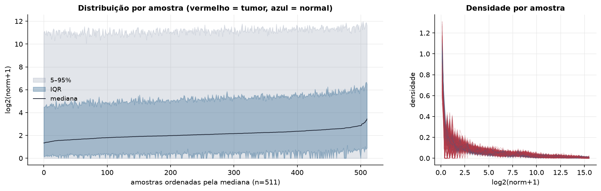
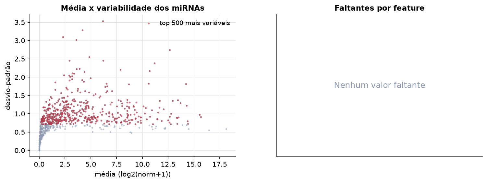
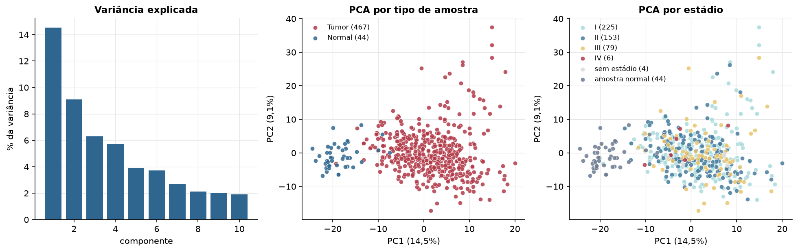
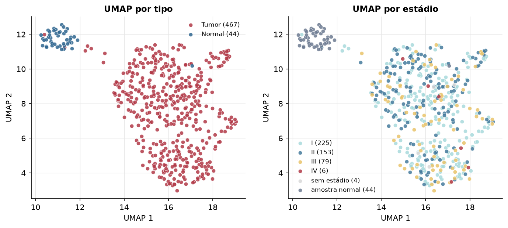
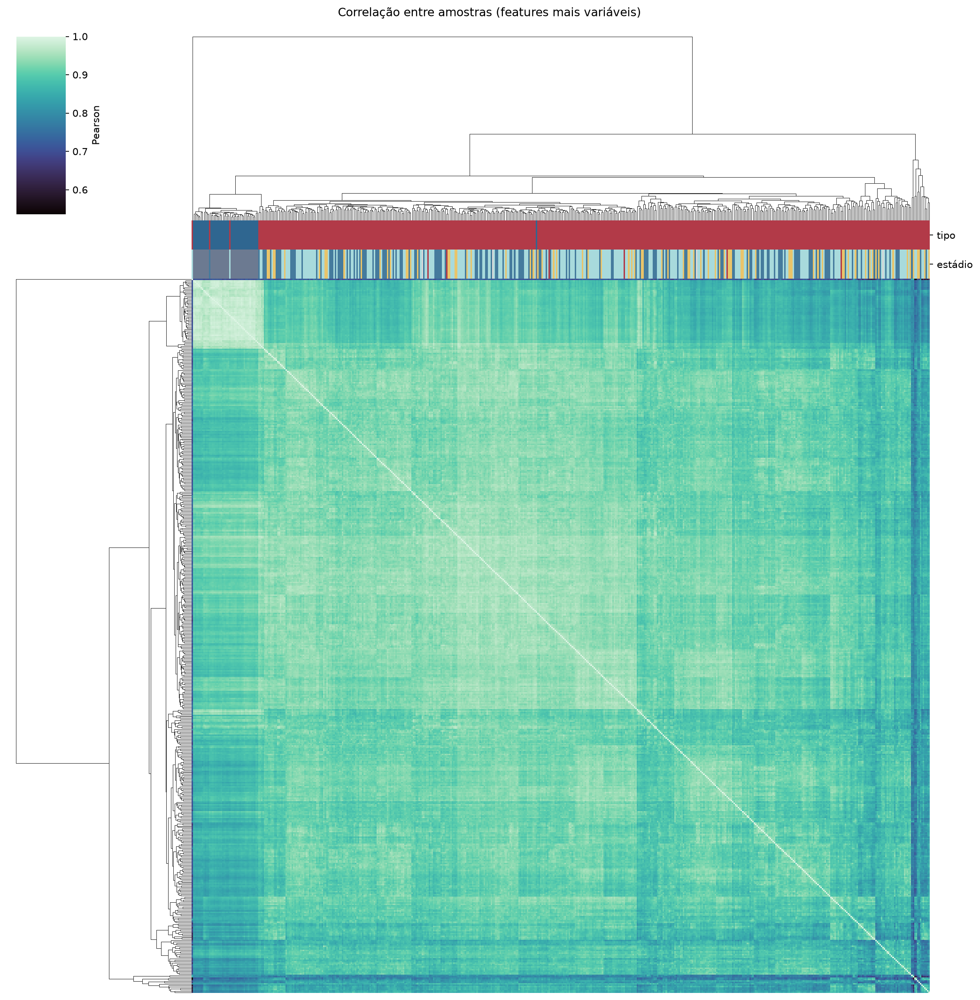
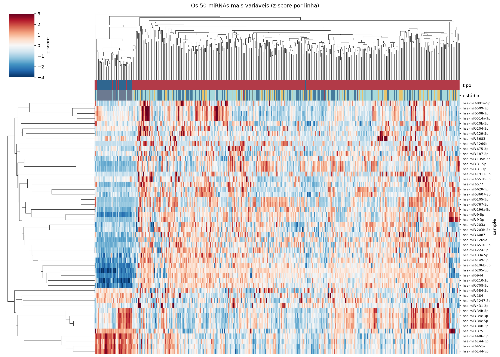
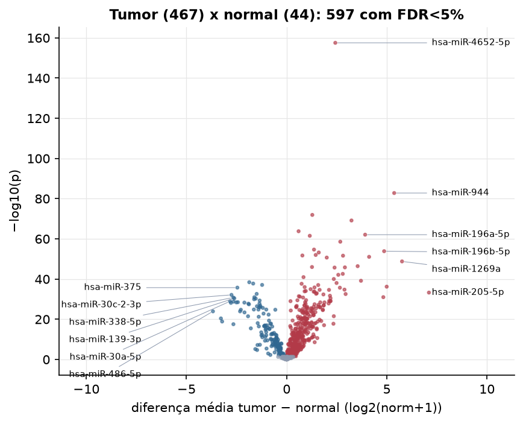
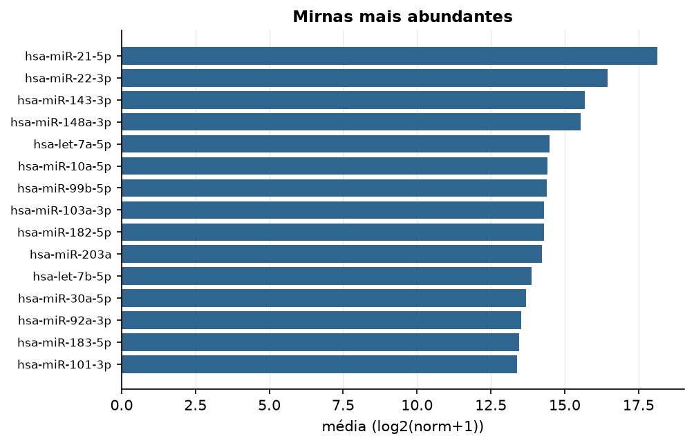

LUSC · miRNA-seq (PanCanAtlas)
miRNA maduro, normalizado e corrigido por lote (EB), log2(x+1) · gerado em 22/10/2026 01:41
743miRNAs
467amostras tumorais
44amostras normais
0,0%valores faltantes
Fonte: PanCanAtlas (pancanMiRs_EBadjOnProtocolPlatformWithoutRepsWithUnCorrectMiRs_08_04_16.xena)
Fita madura (5p/3p) já normalizada. As contagens brutas por precursor estão no relatório de contagens.
Principais resultados
- 743 miRNAs medidos em 511 amostras (467 tumorais e 44 normais); 0,0% dos valores estão faltando.
- Os dois primeiros componentes principais explicam 14,5% e 9,1% da variância das features mais variáveis.
- Correlação mediana entre amostras: 0,91.
- Amostras com correlação muito abaixo das demais (possíveis outliers técnicos): TCGA-66-2754-01, TCGA-33-4533-01, TCGA-37-4130-01, TCGA-56-1622-01, TCGA-85-6560-01, TCGA-39-5040-01, TCGA-85-8352-01, TCGA-56-8083-01.
- Tumor x normal: 597 miRNAs diferentes com FDR < 5% (447 maiores no tumor, 150 maiores no normal; 44 pacientes têm o par tumor-normal).
- Mais aumentados no tumor: hsa-miR-4652-5p, hsa-miR-944, hsa-miR-3687, hsa-miR-31-5p, hsa-miR-7974, hsa-miR-196a-5p, hsa-miR-3648, hsa-miR-31-3p.
- Mais reduzidos no tumor: hsa-miR-140-3p, hsa-miR-100-5p, hsa-miR-181a-3p, hsa-miR-375, hsa-miR-29c-3p, hsa-miR-30c-2-3p, hsa-miR-181a-5p, hsa-miR-338-5p.
- Associações clínicas com p < 0,05 nos componentes principais: PC1 com estádio (p=0.043); PC3 com estádio (p=0.027); PC1 com idade (p=0.017).
Distribuição dos valores


Estrutura das amostras




Tumor x normal

Features mais diferentes entre tumor e normal
| sample | diferenca_tumor_menos_normal | t | p | fdr |
|---|---|---|---|---|
| hsa-miR-4652-5p | 2.429 | 40.298 | 2.84e-158 | 2.1e-155 |
| hsa-miR-944 | 5.368 | 40.334 | 1.55e-83 | 5.73e-81 |
| hsa-miR-3687 | 1.281 | 24.421 | 1.18e-72 | 2.92e-70 |
| hsa-miR-31-5p | 3.236 | 25.802 | 7.06e-70 | 1.31e-67 |
| hsa-miR-7974 | 0.596 | 19.677 | 1.61e-64 | 2.38e-62 |
| hsa-miR-196a-5p | 3.918 | 25.975 | 8.28e-63 | 1.02e-60 |
| hsa-miR-3648 | 1.155 | 22.035 | 2.94e-62 | 3.11e-60 |
| hsa-miR-31-3p | 2.678 | 22.808 | 2.51e-59 | 2.33e-57 |
| hsa-miR-301b | 1.366 | 22.701 | 2.15e-55 | 1.77e-53 |
| hsa-miR-196b-5p | 4.866 | 33.87 | 1.35e-54 | 9.98e-53 |
| hsa-miR-615-3p | 1.604 | 20.791 | 5.9e-54 | 3.97e-52 |
| hsa-miR-183-3p | 1.451 | 24.417 | 9.94e-53 | 6.13e-51 |
| hsa-miR-4449 | 0.786 | 17.522 | 1.86e-52 | 1.06e-50 |
| hsa-miR-577 | 2.814 | 22.498 | 2.33e-52 | 1.23e-50 |
| hsa-miR-105-5p | 4.116 | 20.88 | 8.67e-52 | 4.28e-50 |
| hsa-miR-9-3p | 2.002 | 21.056 | 2.02e-51 | 9.35e-50 |
| hsa-miR-1269a | 5.76 | 24.766 | 1.63e-49 | 7.08e-48 |
| hsa-miR-767-5p | 3.545 | 19.334 | 3.76e-47 | 1.55e-45 |
| hsa-miR-760 | 1.265 | 18.729 | 1.01e-46 | 3.92e-45 |
| hsa-miR-183-5p | 2.908 | 29.653 | 1.5e-46 | 5.55e-45 |
| hsa-miR-1269b | 2.391 | 15.913 | 1.9e-46 | 6.69e-45 |
| hsa-miR-6510-3p | 2.802 | 20.208 | 2.61e-43 | 8.77e-42 |
| hsa-miR-224-5p | 2.578 | 21.51 | 7.56e-43 | 2.43e-41 |
| hsa-miR-7641 | 0.842 | 15.524 | 1.09e-41 | 3.35e-40 |
| hsa-miR-130b-3p | 2.354 | 26.764 | 9.28e-41 | 2.75e-39 |
| hsa-miR-708-5p | 3.71 | 29.221 | 7.04e-40 | 2e-38 |
| hsa-miR-140-3p | -1.866 | -25.455 | 3.71e-39 | 1.02e-37 |
| hsa-miR-130b-5p | 2.492 | 26.403 | 8.86e-39 | 2.34e-37 |
| hsa-miR-100-5p | -1.67 | -20.631 | 1.69e-38 | 4.32e-37 |
| hsa-miR-365a-5p | 0.747 | 16.978 | 2.2e-38 | 5.42e-37 |
Associação com variáveis clínicas
p-valores da associação dos três primeiros componentes principais (só tumores) com estádio (Kruskal-Wallis), sexo (Mann-Whitney), idade (Spearman) e sobrevida global (Cox univariado).
| estádio (Kruskal) | sexo (Mann-Whitney) | idade (Spearman) | sobrevida OS (Cox) | |
|---|---|---|---|---|
| PC1 (10,9%) | 0.043 | 0.971 | 0.017 | 0.24 |
| PC2 (9,4%) | 0.798 | 0.746 | 0.206 | 0.37 |
| PC3 (6,7%) | 0.027 | 0.398 | 0.471 | 0.695 |
Mais abundantes
